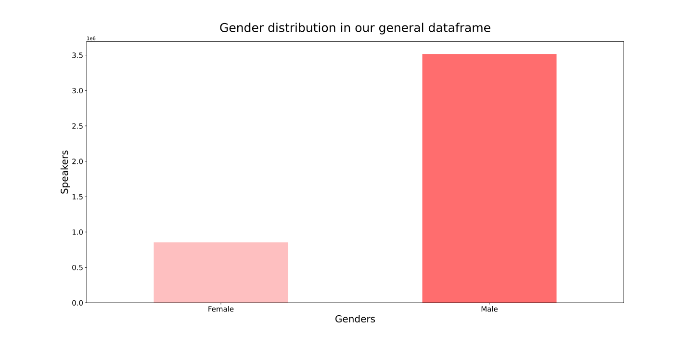

Analysis of speech behaviours between genders.
Do speech behaviours related to confidence and uncertainty vary between men and women?

Context
Among all species on Earth, humans have a unique capability of communication using a symbolic communication system, i.e., verbal and written language. The highly sophisticated language enables humans to communicate in a very precise and complex manner. Still, communicative speech acts seem to differ between genders. One of the major differences in women and men’s speech is that men have been found to dominate conversations through the use of interruptions and overlaps. Additionally, men use strong expletives, while women use politer versions.

In this project we investigate the variety of speech which is related to specific gender, social norms and variations in the use of language among those genders. We suppose men and women have different speech behaviours, women talking with more uncertainties (doubts). For example, we expect a woman to say “I expect this to do that” while a man would rather say “I know this does that”. Our idea is therefore to analyse whether there is a real difference between genders and, if so, to what extent it is the case.
Goals
We are interested in using this dataset to answer the following question:
"Do speech behaviours related to confidence and uncertainty vary between men and women?"
To answer this question, we'll go through the following points:
Profession gender difference
Culture gender difference
Temporal gender difference
What is our data?
In the following, we analyse the data from Quotebank, an open corpus which gathers 178 million quotations (attributed to speakers) from 2008 to 2020. Still, in this project, we will only focus on the most recent quotations, being from 2015 to 2020. We combine this dataset with speakers’ information from Wikidata, a collaboratively edited open source knowledge base.
X
Methods
Creation of professional & background data frames
To have a general overview of the speakers’ occupations, we focus on four main professional fields: arts, science, economy and politics. Our speakers are then regrouped under professions from each professional field.
Classifier
To analyse speech uncertainty, we adapted an already existing uncertainty detection classifier, using 6 features. Uncertainty is defined by speculative verbs (like suggest or presume), adjectives and adverbs (like probably, possibly), auxiliary verbs (must, should) or the use of some tense or modes of conjugation (subjunctive, conditional). This classifier is an automatic machine learning method to detect uncertainty in natural language.
Let's explore our data!
Before starting to investigate our research questions, let's have a look at what does our data look like.
Gender exploration
We see that there are 31 genders present in Wikidata. In this analysis, we will only focus on 2 genders: “Female” and “Male”.
Languages
We notice that the majority of our the quotes are in English. Still, there are some non-English quotes in the dataset. These are removed from our analysis and we only keep the English ones.
Female/Male Ratio

As seen from the data, a great majority of speakers are males, meaning there is a persistent under-representation of women in the news. Unfortunately, this was expected. Indeed, even today in the early twenty-first century, women continue to receive substantially less media coverage than men, despite women’s much increased participation in public life. However, only few studies have systematically examined whether such media bias exists.
Still, a recent American Sociological Review found that societal-level inequalities are the dominant determinants of continued gender differences in coverage: the media focuses nearly exclusively on the highest strata of occupational and social hierarchies, in which women’s representation has remained poor. As a result, we will focus our analysis on whether there is a difference in speech uncertainty in different professional areas, and whether those have improved from 2015 to 2020. Additionally, to broaden our analysis, the background of the speakers will also be analysed to find other possible correlations between the speakers’ environments and their speech behaviours.
Let's check out how many women are represented in the 4 profession field we defined of interest.
The female ratio for the different occupation groups

Politicians

Artist

Scientists

Economists

All occupations
Results
Analysis of differences in communicative acts in relation to gender within the different professional areas
Looking at the figure about, there seems to be only few differences in speech uncertainty between men and women, regrouping all quotes (2015 to 2020) together.
Background (environment)
What are the roles of environment (nationality), culture/tradition (religion, ethnic groups), and education (whether the speaker obtained an academic degree) in determining those differences in speech between men and women? How are the lines drawn between the language we use and the environment around us?